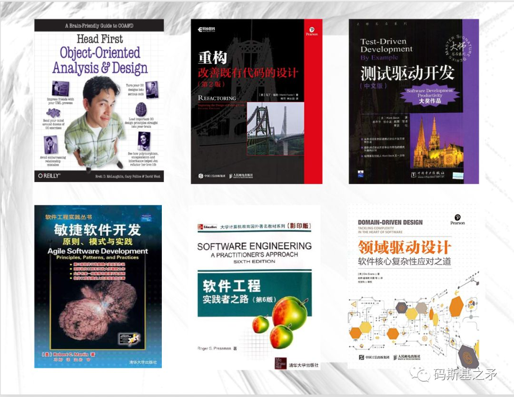

附录 B · 推荐书单
源自第 12 讲《一个普通程序员的「极简」敏捷开发实践史》文末书单，分为「工程实践篇」与「敏捷管理篇」。均为软件领域公认经典（注：非广告）。
工程实践篇

敏捷管理篇

文字版书目（便于检索）
工程实践
- 《重构》
- 《敏捷开发：原则，模式与实践》
- 《Head First OOA&OOD》
- 《软件工程：实践者之路》
- 《领域驱动设计》（Eric Evans）
敏捷管理
- 《轻松敏捷之旅》
- 《硝烟中的 Scrum 和 XP》
- 《用户故事与敏捷方法》
- 《敏捷估算与规划》
- 《敏捷软件开发》（Mike Cohn）